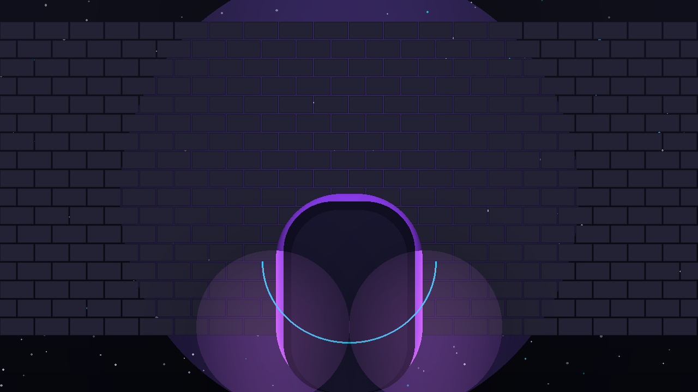

← все игры

Dungeon of the Void
Рогалик на 100 этажей: процедурные миры из сида, три класса, волшебство и сейвы, которые не ломаются. Один поток rAF, рендер на Canvas 2D.
Что внутри
- Процедурная генерация — каждый этаж собирается из сида: загрузил сейв, получил тот же мир.
- 100 этажей, боссы, финальная победа и 11 книг лора по пути.
- Три класса с пассивными умениями и магазинами между этажами.
- Сейвы в localStorage с версионированием и миграцией старых схем.
- EN/RU локализация и процедурная музыка через Web Audio.
Управление
| Действие | Клавиши |
|---|---|
| Движение | WASD / стрелки |
| Атака | Space / клик |
| Способность класса | Q |
| Предметы и инвентарь | E / I |
| Пауза | Esc |
Техническая часть
- Фиксированный тик 30 Гц с аккумулятором и капом — после паузы игра не «догоняет» время.
- DPR-aware рендер: на экранах 2–3x тайлы остаются чёткими и кэшируются.
- 12 модулей IIFE с однонаправленными зависимами: симуляция, рендер и UI жёстко разделены.
- Чистая логика не трогает DOM — отсюда легкость тестирования.
- Спавн без
Math.random: мир детерминирован сидом.
Тик: 1000/30 мс, аккумулятор с капом 8 тиков Модули: 12 IIFE, однонаправленные зависимости Procedural: сид → мир, без Math.random в спавне Статус: играбелен от старта до победы
Подробнее в блоге: Dungeon of the Void: рогалик на 100 этажей